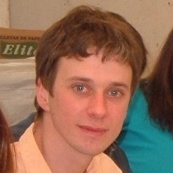
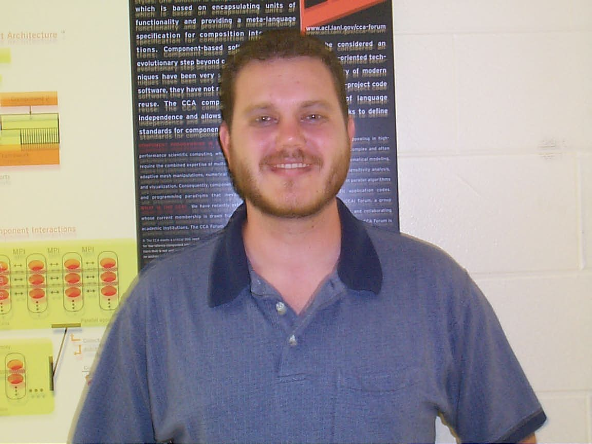
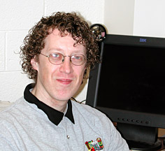

Please do not email individual PETSc authors. E-mail to petsc-maint@mcs.anl.gov is automatically distributed to the authors, so our response time using this address will be fastest.
Current Active Developers (December 2011) -
 |
|||
| Mark Adams | Satish Balay | Jed Brown | Peter Brune |
|  |  |
 |
|
| Lisandro Dalcin | Sean Farley | Dmitry Karpeev | Matthew Knepley |
 |
 |
 |
 |
| Lois Curfman McInnes | Shrirang Abhyankar | Barry Smith | Hong Zhang |
Previous and Intermittent Developers -
|  |  |  |
|
| Kris Buschelman | Victor Eijkhout | William Gropp | Dinesh Kaushik |
| Victor Minden |
See also Acknowledgements for many additional contributors.